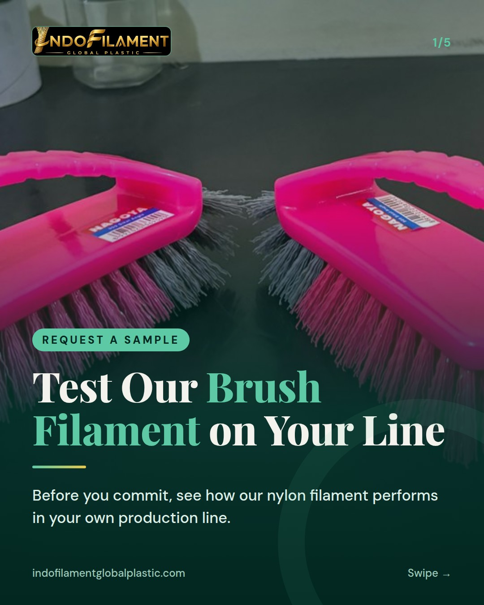
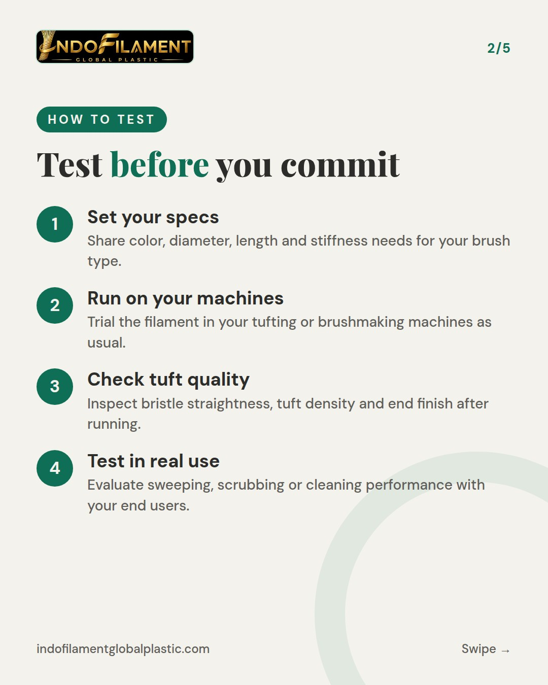
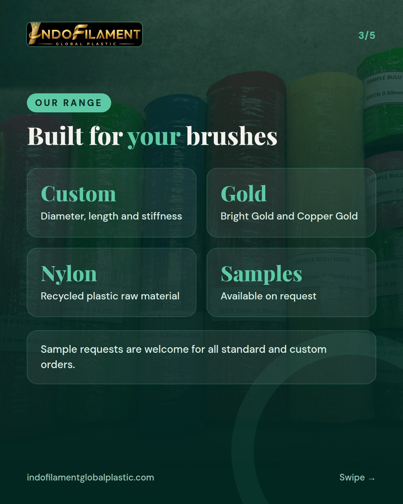
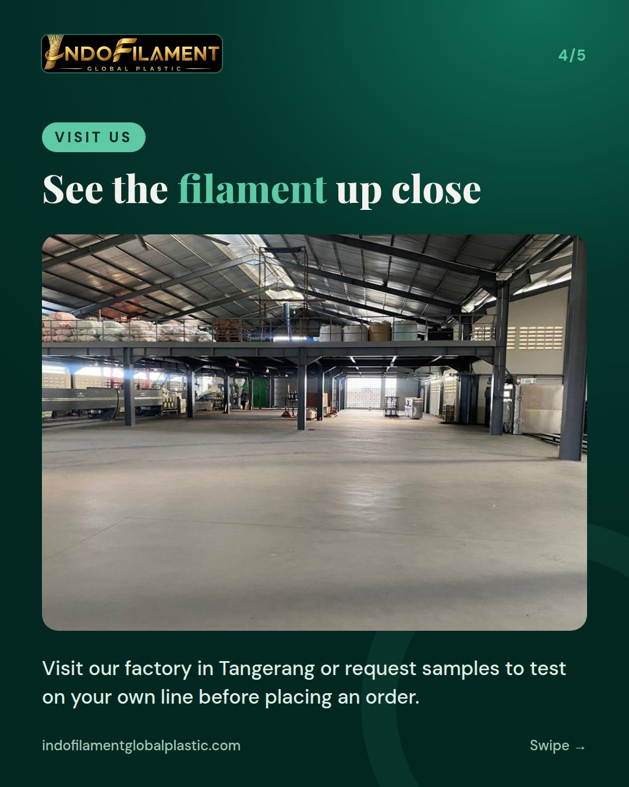
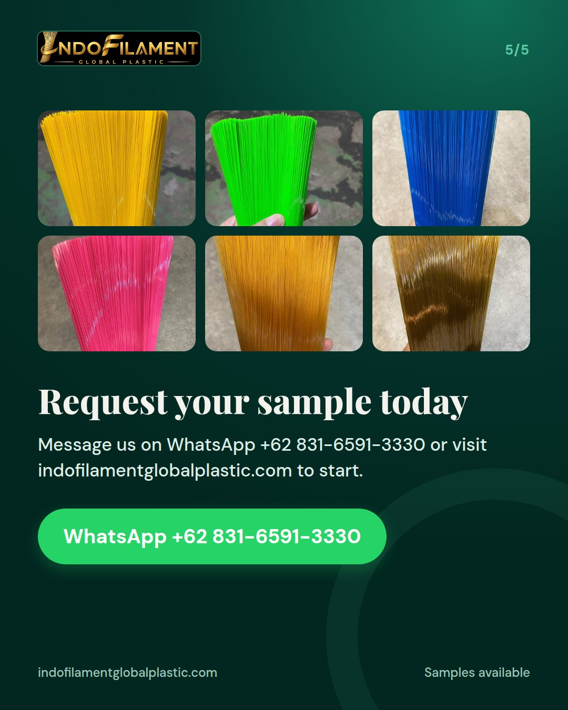

Minta sampel dulu: cara menguji bulu sikat di lini produksi Anda





Before you buy in bulk, test it on your own line. 🧪 At PT Indofilament Global Plastic, we believe a good brush starts with good filament. That is why we encourage every buyer to request a sample first and check how our nylon filament runs on their machines and performs in their final product. Our sample testing approach is simple: • Share your target color, diameter, length and stiffness • Run the filament on your tufting or brushmaking equipment • Check bristle straightness, tuft density and end finish • Evaluate performance in real use with your end customers We produce nylon filament from recycled plastic raw material on modern machines, for broom bristles, brush bristles, custom OEM and private label orders. Choose from yellow, green, blue, pink, black, white and Gold Series finishes, or request a custom color. Our factory in Tangerang is open to visitors, and our team is ready to help you pick the right specification for your brand. Request a sample via WhatsApp +62 831-6591-3330 or DM us to get started. ✨ #brushfilament #broomfilament #nylonfilament #brushmanufacturer #madeinindonesia #privatelabel #OEM #goldseries #requestasample